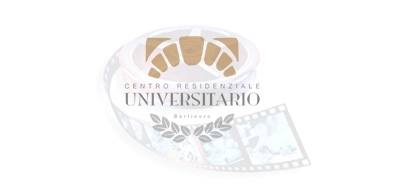
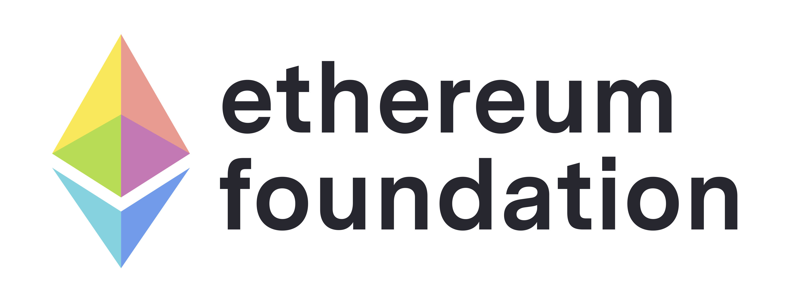

DISCO: DIScrete logarithm based CryptO
May May 22-26, 2022
University Residential Center
Bertinoro (Forlì-Cesena), Italy
blah
Organizers:
Eike Kiltz, Ruhr Universität Bochum
Hoeteck Wee, NTT Research
Logistics:
Beatrice Lolla,
Centro Universitario Residenziale di Bertinoro
Sponsors:
University Residential Center
Bertinoro (Forlì-Cesena), Italy
|  |  |